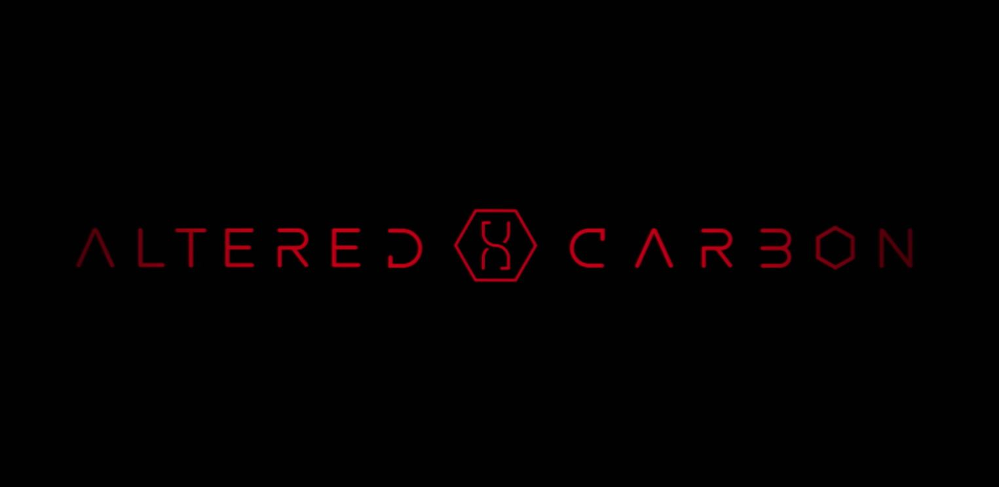
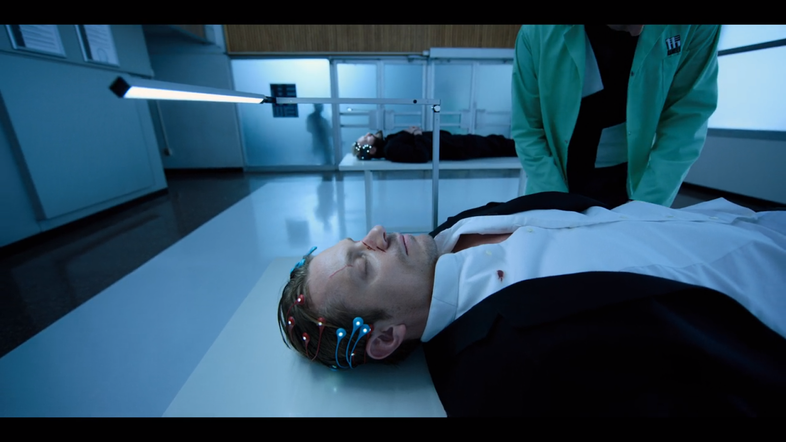
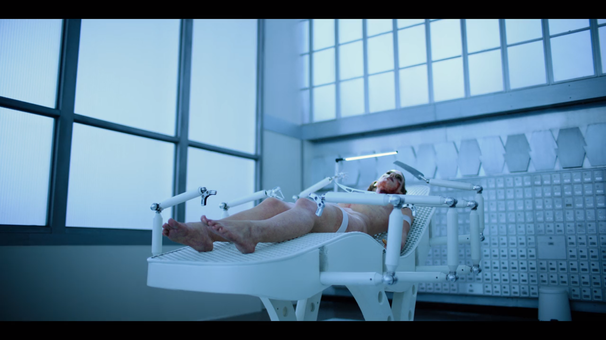
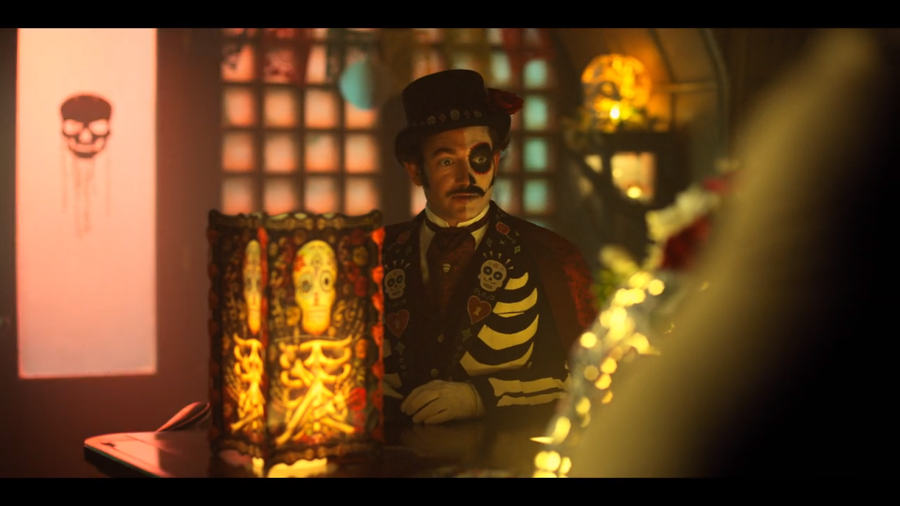
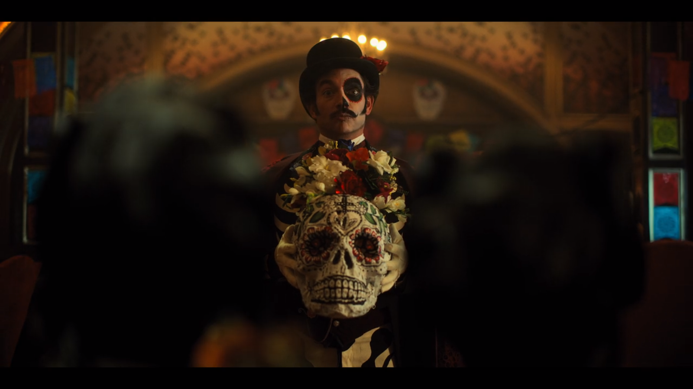
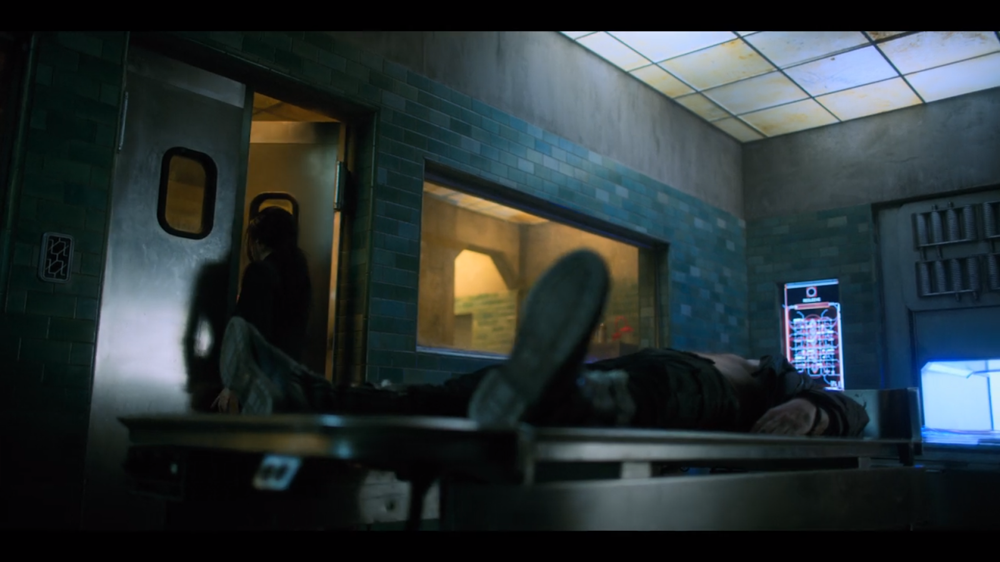

Altered Carbon
Datos de Produccion
Director: Alex Graves
Tipo: Serie
Duración: 48min
Ficha en IMDB: http://www.imdb.com/title/tt6607748/?ref_=ttep_ep4
Sinopsis
Torturado por su captor, Kovacs utiliza su entrenamiento como soldado de las Brigadas para sobrevivir. Ortega da una sorpresa a su familia el Día de los Muertos.
Necesidades
La serie trata de plantear una solución al problema irreversible por antonomasia de la humanidad: la muerte. Para ello se ha creado un dispositivo capaz de concentrar la conciencia de una persona , llamado “pila”. Este aparato permite cambiar de cuerpo sin problema , evitando así la muerte. Por otra parte se han creado distintos aparatos para las “pilas”. En este capítulo se nos muestra simuladores de realidad utilizados para diversas tareas , como entrenamientos o torturas...
Dispositivo (Interfaz/tecnología):
Simulador de realidad
Primera Aparición:
0:00:48
Necesidad:
En el centro que se encuentra el protagonista se realizan torturas mediante estos simuladores . Estos aparatos cubren la necesidad de simular distintas situaciones.
Dispositivo (Interfaz/tecnología):
Maquina de autopsias
Primera Aparición:
0:01:17
Necesidad:
Esta máquina es utilizada en la serie para practicar autopsias . En esta serie los cuerpos no son más que meros vehículos y de los cuerpos pueden cambiar órganos para volver a ser utilizados. La mayoría de estos órganos son artificiales y normalmente están modificados para tener mayores prestaciones.
Dispositivo (Interfaz/tecnología):
Hotel manejado por IA
Primera Aparición:
0:03:02
Necesidad:
Este hotel no tiene personal humano como tal. Está totalmente automatizado y es gestionado por una IA que se muestra así mismo por un holograma.
Dispositivo (Interfaz/tecnología):
Holograma
Primera Aparición:
0:03:25
Necesidad:
Representaciones incorpóreas en 3D de personas o , en el caso del hotel, de personajes ficticios. Parte de la necesidad de la visualización más exacta de aquello que solemos ver por pantalla.
Dispositivo (Interfaz/tecnología):
“Pila” y “Contenedor”
Primera Aparición:
0:10:16
Necesidad:
En esta escena se muestra el uso de las “pilas” y los “contenedores”(los cuerpos que albergan estas pilas). En este caso se utiliza para traer de vuelta a la abuela de uno de los personajes.
Dispositivo (Interfaz/tecnología):
Comunicador Ocular
Primera Aparición:
0:40:57
Necesidad:
Existen unos dispositivos con prácticamente la misma utilidad que un móvil(obviamente con muchas funciones , y con mayor potencia). Estos son como una lentilla que no necesita más que ser puesta en el ojo. Cubre las necesidades de un móvil pero con mayores prestaciones.

Tecnologías involucradas
Las tecnologías involucradas principalmente se basa en el traspaso de la consciencia humana a dispositivos , y con estos dispositivos generar tecnología alrededor.
Tecnologías disponibles en el momento de la producción
La máquina de autopsia exactamente ahora mismo como tal no existe, pero si hay robots que son manejados por médicos capaces de operar a una persona. Actualmente se están desarrollando robots autónomos que sean capaces de operar sin que una persona los maneje.En el caso de la realidad virtual se han desarrollado dispositivos como HTC vive u oculus rift que nos dan un acercamiento a esta tecnología.
Tecnologías imaginadas en el momento de la producción
Hologramas actualmente no hay nada parecido en la actualidad toda la tecnología relacionada con esto se encuentra en una fase experimental. En la actualidad las IA todavía no se encargan de organizar lugares públicos como hoteles. Se está trabajando en coches automáticos y demás. Pero todo esta en fase muy experimental. En el caso de las “pilas” y los “contenedores” no hay nada ni cercanamente parecido. Se ha desarrollado órganos sintéticos y también se ha estudiado como funciona la consciencia humana .
Impacto
Al ser una serie tan reciente no ha tenido actualmente ningún impacto con referencia al desarrollo de nuevas tecnologías.
Referencias
- Alex Graves, Altered Carbon, http://www.imdb.com/title/tt6607748/?ref_=ttep_ep4 (última visita: 20 marzo de 2018)